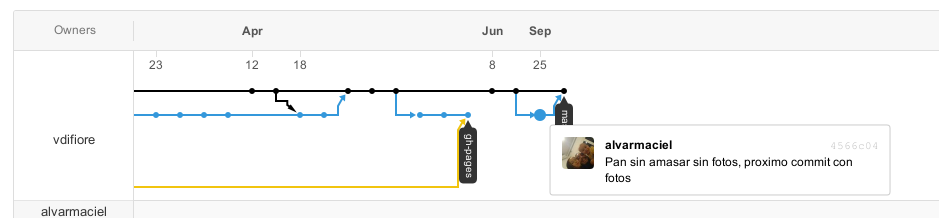

Github para docentes.
Alvar Maciel
alvarmaciel@gmail.com
Table of Contents
Las planificaciones o planes de clase
- Establecen un plan de acción.
- Tentativo y Modificable.
- Documenta un recorrido.
- ¿Personal o público?
Repositorio Público

Porque permite:
- Tener control de las versiones de los textos

- Aprender los flujos y metodologías propios de los desarrolladores que creo, puede cambiar, en el sentido de innovar, nuestras prácticas docentes. Como una manera de abrir las puertas del aula para trabajar con otros docentes.
- GiThub aporta una capa social a GIT.
Para qué:
- Para tener los textos que escribimos en la máquina con una copia en internet
- Podemos trabajar de forma desconectada y cuando tenemos una conexión, sincronizar con la copia en internet. O viceversa.
- Para dejar disponibles nuestros planes de trabajo
- Para que otros hagan aportes a nuestras planificaciones
- Para que otros usen, copien y distribuyan nuestras ideas, así podemos tomar a portes y aportar al trabajo de otros.